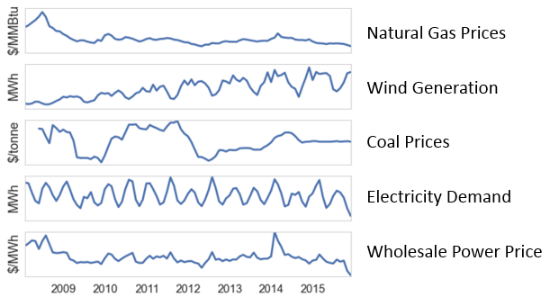

Gathering Data
According to the US Energy Information Administration, the key factors
that influence wholesale power prices are demand for electricity and the cost of fuel
for generators. We gathered historical electricity demand data from wholesale market operator websites, and since natural gas and coal are the largest sources
of electricity production in the region. Though wind generation still only makes up a small portion of total electricity generation, it has been fingered as
a culprit for depressed wholesale prices, and therefore we also include it as a feature in our model.
Unlike the rate for electricity you pay at home, wholesale power prices vary by time and location. For this reason it was important for us to train our
model on the price at the specific locations of Exelon's nuclear plants in question. The map detail on the left shows the approximate location of these
plants.
Initial Observations
Observations and predictions were made based on a dataset of 32,017 records.
The figure below displays the results of our data collection efforts: the historical values of wholesale, electricity, gas and coal prices,
electricity demand, and wind generation in the Midwest region. It is notable that wholesale electricity and gas prices both fell significantly in
2008–2009. Coal prices fluctuate but show no clear trend, while wind generation capacity has steadily increased since 2008 and shows increasingly sharp seasonal
variation (while wind and demand are both displayed in units of MWh and scaled in a way to reveal trends, as wind is actually a tiny fraction of total
electricity demand). Megawatt-hours (MWh) are a common unit of measure for both electricity generation capacity and demand, and the price data gathered by the
project team for wind generation and demand is in dollars per Megawatt-hour ($/MWh).

Predicting Electricity Prices
The final prediction model captured 93% of the variance in wholesale electricity prices.
The project team evaluated a number of analytical techniques to predict wholesale electricity prices using the available data for the years 2008–2015
for overall demand, natural gas prices, coal prices, and wind generation capacity. Linear regression techniques generally produced poor results, achieving a
maximum accuracy of only 44% (as measured by r-squared). This may partly be explained by the numerous non-linearities we observed in the relationships between
features in our model. With this in mind, we decided to try a Random Forest Regressor, which is an ensemble of different regression trees and is considered
appropriate for non-linear multiple regression. This approach resulted in enormous gains in accuracy: the final predictive model was able to capture 93%
of the variance in wholesale electricity prices using the selected predictors. The project team suspects that the Random Forest approach was better able to
capture the cyclical (i.e., non-linear) nature of our time series data, which fluctuates depending on the hour of the day, day of the week, and month of the year.